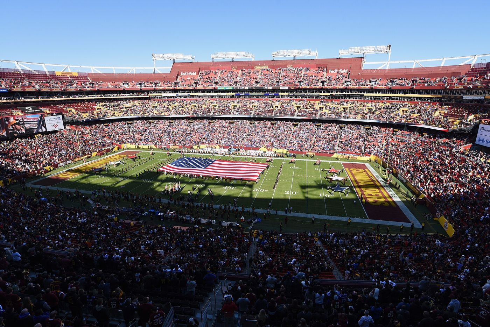

Anteprima · NFL · Week 11
Burrow contro Daniels: i Bengals lanciati, Washington cerca il colpo
Cincinnati Bengals @ Washington Commanders · 24/11/2026, ore 02:15 italiane · Northwest Stadium
Nella notte tra lunedì e martedì 24 novembre, alle 2:15 italiane, il Northwest Stadium ospita il Monday Night Football tra Bengals e Commanders, una sfida tra due quarterback che hanno vinto l'Heisman con LSU: Joe Burrow e Jayden Daniels.
Cincinnati è una squadra trasformata. Dopo un avvio da 2-2 non ha più perso: cinque vittorie di fila, l'ultima 38-18 sui Pittsburgh Steelers, e il primo posto nella AFC North dopo una stagione chiusa 6-11 e fuori dai playoff. Burrow è in netta crescita, con ventisette touchdown e sei intercetti, e ha a disposizione uno degli attacchi più prolifici della lega. Ja'Marr Chase e Tee Higgins formano una coppia di ricevitori che pochi possono reggere: contro gli Steelers Chase ha preso 231 yard.
Washington vive una stagione più complicata. Nel 2025 Daniels aveva giocato solo sette partite per infortunio e i Commanders avevano chiuso 5-12; quest'anno il bilancio è 3-5-1, terzo posto nella NFC East alle spalle dei New York Giants, ed è passato da tre quarterback titolari. Daniels è tornato e nell'ultima partita ha firmato il 24-21 sui Giants. Stefon Diggs, il ricevitore più produttivo, in settimana non si è allenato, ma per riposo e non per un infortunio.
I precedenti recenti sorridono a Washington, che ha vinto le ultime due sfide, compreso il 38-33 del 2024, e cerca per la prima volta nella sua storia la terza vittoria di fila contro Cincinnati. I Bengals partono favoriti.
Leggi su PureStats con meteo e numeri.jpg){kind=link}